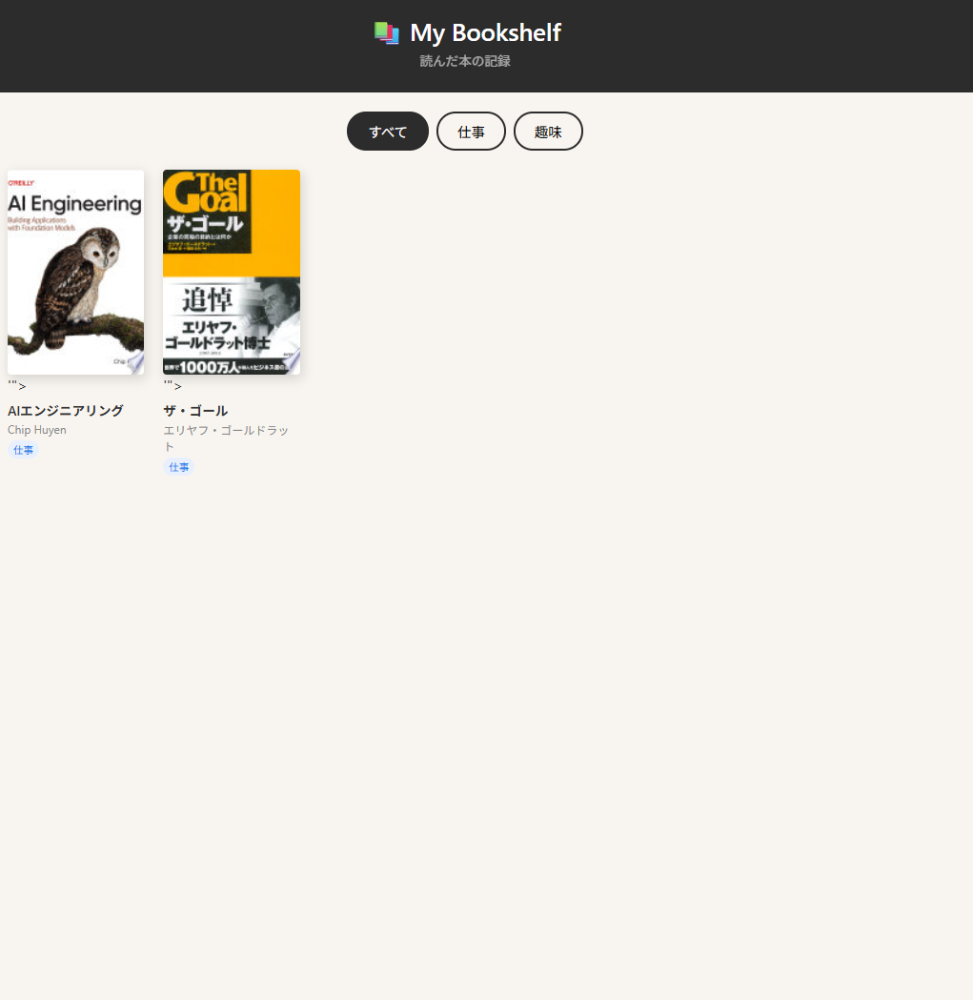
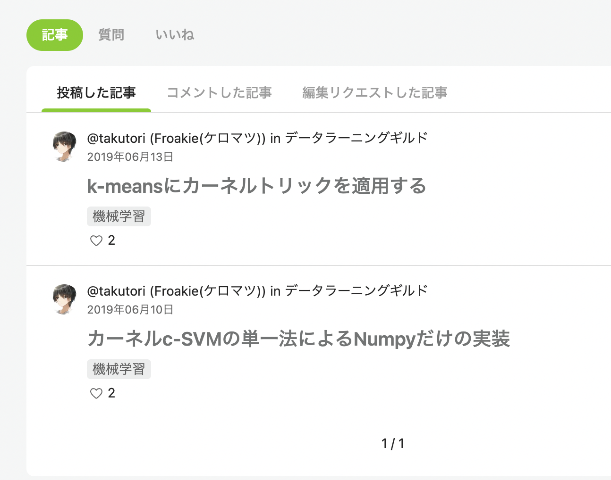
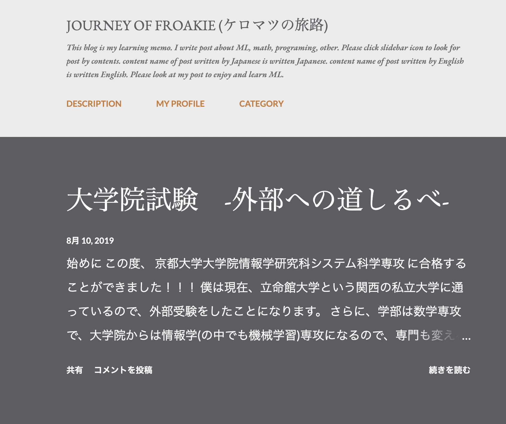

本棚
自分専用の本棚です。Claude Codeで自動化投稿できるようにしています。
学生時代からデータサイエンティストとして、サービス開発、改善、研究開発に従事。現在日経大手企業にてデータサイエンティストとして研究開発、分析業務を行う。また、副業でもデータサイエンティストとして活動中。
現状の業務フローを整理し、AIが最もインパクトを生む領域を特定します。PoC計画から費用対効果の試算まで、導入前の意思決定を一貫してサポートします。
AIエージェントを活用し、繰り返し業務や情報収集・整理を自動化します。社内ツールとの連携も含め、実務に即した自動化フローを設計・実装します。
マーケティング分析から経営判断まで、データを根拠にした意思決定をサポートします。顧客セグメンテーション、需要予測、KPI設計など幅広い分析ニーズに対応します。
課題定義からモデル開発・評価まで一貫して対応します。「動くか試したい」段階から「精度の根拠を説明したい」段階まで、ビジネスに繋がるPoCを実現します。
ポートフォリオサイトや活動紹介ページなど、個人が「ネット上に存在する」ための場所をつくります。
| 年月 | 組織 | |
|---|---|---|
| 2016/04 - 2020/03 | 立命館大学 | 数理科学科 入学・卒業 |
| 2018/04 - 2019/04 | 某マーケティング企業 | 学生インターンとして欠測処理の研究開発 |
| 2019/05 - 2025/08 | 某スタートアップ企業 | 業務委託契約で、DSを用いたサービス開発/改善 |
| 2020/04 - 2022/03 | 京都大学大学院 | 情報学研究科 入学・卒業 |
| 2022/04 - 現在 | 某日経大手企業 | 係長相当の役職で新卒入社 |
| 2024/08 - 2025/10 | 某スタートアップ企業 | 画像処理技術の実証実験 |

自分専用の本棚です。Claude Codeで自動化投稿できるようにしています。

機械学習に限らず、様々な技術系の記事を書いています。

学生時代に勉強したことを記事にしています。